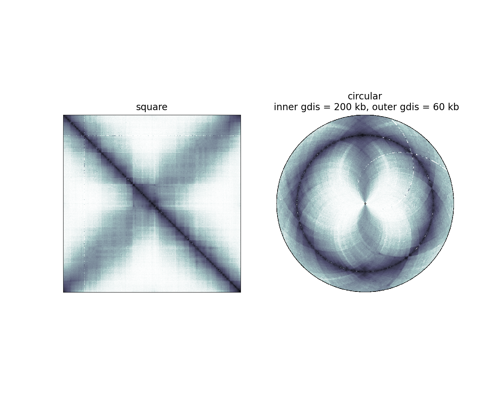

Note
Click here to download the full example code or to run this example in your browser via Binder
Square versus circular displays¶
import numpy as np
import matplotlib # Need this to check the version
import matplotlib.pyplot as plt
from matplotlib import colors
from circhic import datasets
from circhic import CircHiCFigure
from circhic.utils import generate_circular_map
from circhic.utils import generate_borders
from iced.normalization import ICE_normalization
#load the data
data = datasets.load_ccrescentus()
counts = data["counts"]
lengths = data["nbins"]
counts, bias = ICE_normalization(counts, output_bias=True)
granularity = 0.5
inner_radius = 0.005
resolution = 9958
inner_gdis, outer_gdis = 2000000, 600000
Circ=generate_circular_map(counts, granularity=granularity, inner_radius=inner_radius, resolution=resolution,
inner_gdis=inner_gdis, outer_gdis=outer_gdis, mode='reflect', origin=1, chromosome_type='circular')
Bord=generate_borders(counts, granularity=granularity, inner_radius=inner_radius, resolution=resolution,
inner_gdis=inner_gdis, outer_gdis=outer_gdis, origin=1, chromosome_type='circular',
thick_r=0.006)
vmax=np.max([counts[i,(i+1)%lengths[0]] for i in range(lengths[0])])
vmin=77
min_non_zero=np.min(counts[counts>0])
plt.figure(figsize=(15,12))
plt.subplot(1,2,1)
if matplotlib.__version__ < "3.2.0": norm = colors.SymLogNorm(min_non_zero)
else: norm = colors.SymLogNorm(min_non_zero, base=np.e)
plt.imshow(counts,norm=norm,vmin=vmin,vmax=vmax,cmap='bone_r')
plt.xticks([]); plt.yticks([]);
plt.title('square',pad=10, fontsize=20);
plt.subplot(1,2,2)
plt.imshow(Circ,norm=norm,vmin=vmin,vmax=vmax,cmap='bone_r',interpolation='None')
plt.imshow(vmax*Bord,norm=norm,vmin=vmin,vmax=vmax,cmap='Greys',interpolation='None')
plt.xticks([]); plt.yticks([]);
plt.axis('off');
plt.title('circular\n inner gdis = 200 kb, outer gdis = 60 kb',pad=10, fontsize=20);
print("")
Total running time of the script: ( 0 minutes 1.432 seconds)